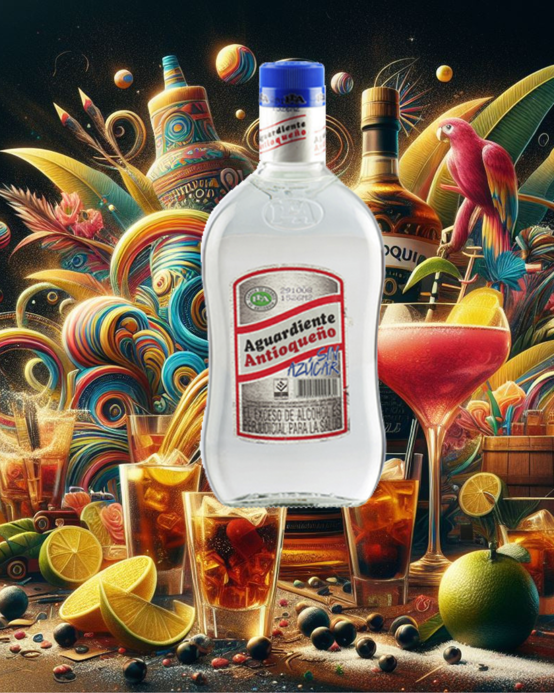

Uno de nuestros productos estrella en Nuestra Licorería La huequita Quiteña es el ya bien Conocido Aguardiente Antioqueño un producto importado de Colombia que se ha ganado el corazon de muchos de nuestros clientes, y es que su sabor y su versatilidad para hacer mezclas hacen del Aguardiente Antioqueño algo imperdible para todos los amantes del buen licor y es que el antioqueño sin azucar, el que tiene la tapa azul es una de las mejores opciones ya que su sabor es neutro y puede ser combinado con agua mineral, jugo, o la bebida de tu preferencia, aunque nunca falta el purista que lo toma al natural, y que para tener una mejor experiencia lo mezcla con sal y limón
Si aun no tienes idea de como puedes mezclarlo aqui te daremos dos recetas para que puedas disfrutar de tu Aguardiente Antioqueño hecho en cocteles, estoy seguro que esta experiencia te encantara, ya que son las mejores opciones para que puedas probar el Antioqueño de una manera diferente necesitaras lo siguiente:
Recuerda que Puedes Econtrar nuestros servicios a domicilio las 24 horas en el norte de Quito Estamos ubicados en Carcelen Alto, y hacemos entrega a toda la ciudad a traves de nuestro sitio web, o si prefieres puedes pedirnos directamente con Uber eats o rappi, en el sector de Carcelen, Licorería La Huequita Quiteña, recuerdad disfrutar la fiesta y el sabor de los Sentidos

Quiero invitarte a explorar nuestro catálogo en línea, que ofrece una amplia gama de licores de alta calidad. Cada compra que realices en "La Huequita Quiteña" no solo te brinda la oportunidad de disfrutar de excelentes licores, sino que también me ayuda a continuar descubriendo y compartiendo mis experiencias en este emocionante viaje. Para acceder al catálogo y realizar tu pedido, simplemente visita nuestro sitio web. Tu apoyo es fundamental y apreciado.
Si tienes alguna pregunta, sugerencia o simplemente deseas saber más sobre cómo viajo de forma económica, no dudes en seguirme en mis redes sociales. Encuéntrame en Instagram @dj.luxopunk y acompáñame en mis experiencias y exploraciones.
Volver al Blog